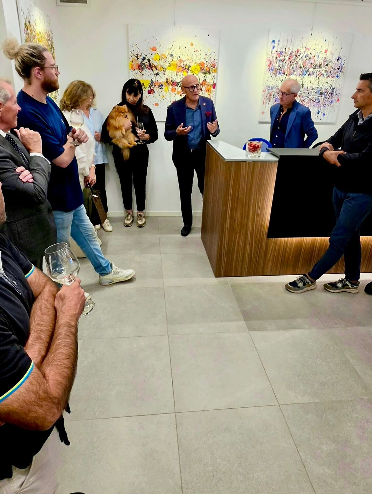
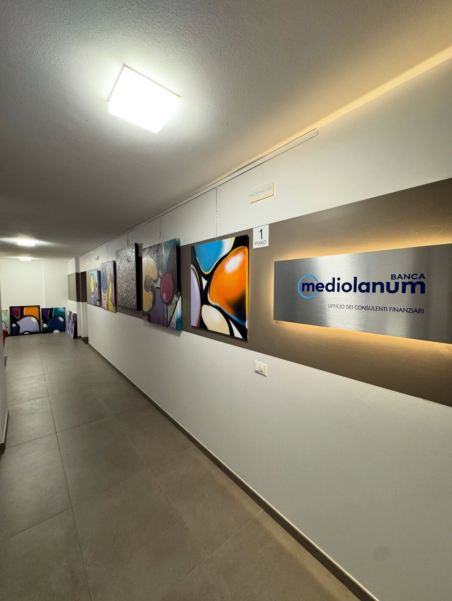
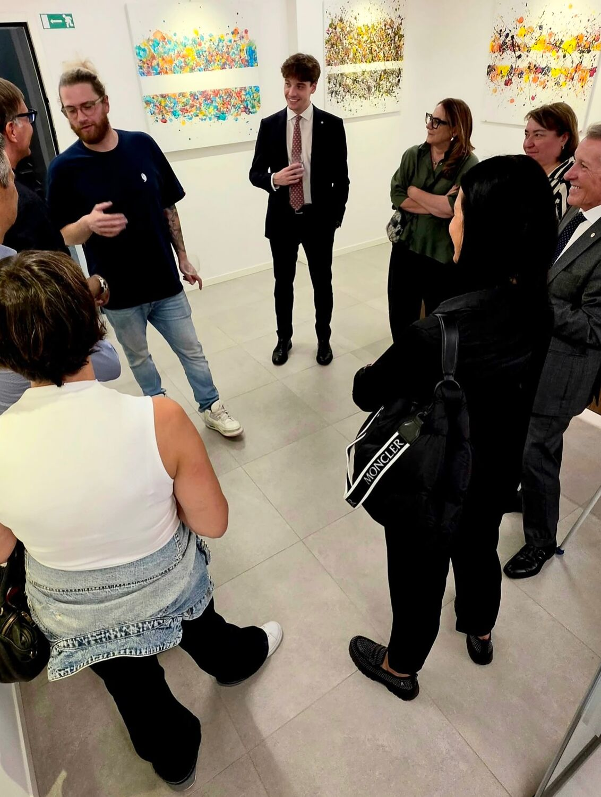
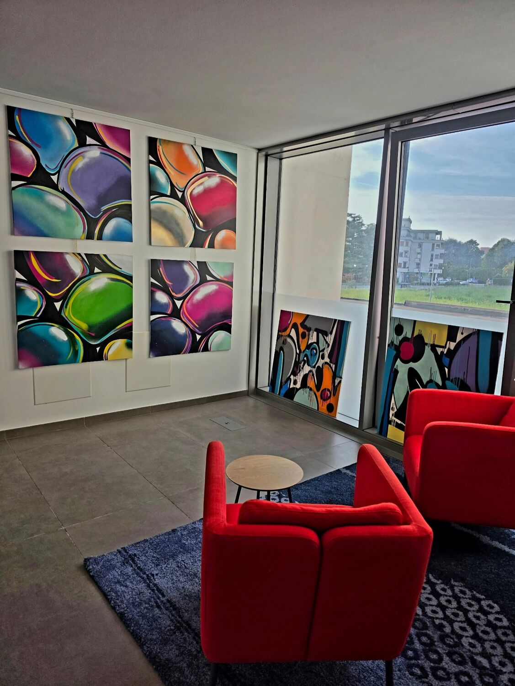

Marco Bomben · Pordenone, 1990
Un quadro è finito quando diventa autosufficiente. Il momento giusto per fermarsi non si decide: si riconosce.
Kairos, in greco, è il momento giusto. Marco coltiva la pittura per anni accanto agli studi di filosofia: laurea all'Università Ca' Foscari di Venezia, poi la magistrale in Scienze Filosofiche.
Lavora con acrilici su tela e su carta e con tecniche miste. Negli ultimi anni ha aggiunto la vernice spray, che dà alle sue forme una superficie lucida, quasi di vetro.
- 1990
- Nasce a Pordenone
- 400+
- Opere realizzate
- 2026
- Sensazioni senza contorni, Banca Mediolanum, Azzano Decimo
La sera dell'apertura



